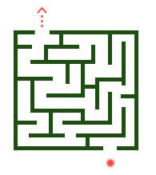

404
Looks like you are in a maze.
Use keyboard to control the ball to maze exit to return home, or
Go Back HomeLooks like you are in a maze.
Use keyboard to control the ball to maze exit to return home, or
Go Back Home